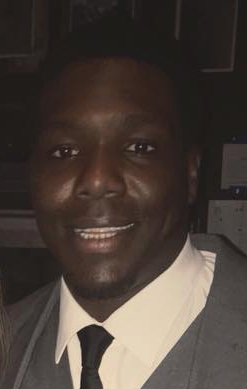

Nenye Diei
About Me

Hello and welcome to my page. My name is Nenye(nen-yay!)...my parents were really into scrabble before I was born. Jk. I have been interested in coding and computer science for probably well over 10 years now. I initially wanted to be a computer science major in college but was told that Business was the way to go. I ended up with a rewarding career with many promotions and laughs and fun along the way; however I always felt like something was missing. After a lot of thinking and re-thinking and weighing my options I made a hard decision and decided to leave my career and
I took a leap of faith in 2015 and left my career so that I could pursue an Associates Degree in software programming. From there I transferred my credits to UWM to try my hand at second bachelor's degree. While I was there I learned a lot but I felt that I was learning more about theory than actually programming; which eventually led me to the web which led me to Boot Camp.